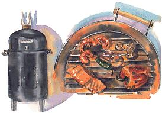
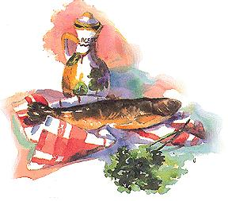
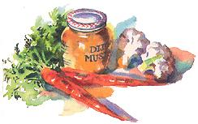

Cooking With Smoke
April/May 1999
MOTHER'S NATURAL KITCHEN
The ultimate feast for the dog days.
by Anne Vassal.
Okay, all you smoked food lovers, it's time for the Smoking Quiz. The question: If you want your meat to have a smoky flavor you would: a) put the lid on the grill while you're grilling the meat, b) throw some water-soaked wood chips on the coals in your grill, c) drown the meat in liquid smoke and call it a day. And the answer is ...none of the above. Save the "Am I mentally challenged?" remarks until I confess to you that six months ago, I would have flunked for sure. I just loved that smoky flavor, but I was unable to produce a piece of smoked food without my trusty bottle of smoke oil and a jar of barbecue sauce. The confusing question for me was, "Is there a difference between grilling and smoking?"
Grilling is basically putting on a silly apron, arming yourself with grilling tools, and setting the food on fire. Unless you're grilling a turkey, the food cooks fast and furious, charred on the outside but tender on the inside. Before your attention can deficit, it's time to eat. Smoking, on the other hand, is a slower cooking process, requiring some patience. The food is cooked by smoking it at a lower temperature so that the smoky flavor can penetrate the food. Smoking meat is also healthier than grilling, since carcinogens are known to be produced by meat juices dripping onto coals. With smoking, the juices drip into a water pan.
So now, you're convinced and ready to convert your kettle grill into a smoker, right?
Forget it, I've been there. After I figured out that my grill was incapable of smoking food, I called Brinkmann, a Texas company specializing in smoker grills and accessories, to get my hands on a water smoker. The trial-and-error cooking process was mercifully brief, and soon the gentle but maddening aroma was turning heads a hundred yards in every direction. Smoking food isn't difficult; you just have to force yourself to hang around the backyard all afternoon, catching rays and drinking whatever. It's a tough call, but you can do it.
EQUIPMENT
The Smoker
The vertical charcoal water smoker is the most commonly used smoker. It's a cylindrical-shaped unit that resembles Star Wars' R2-D2. Our Brinkmann water smoker retails for about $60. The unit contains two racks for grilling, a water pan, and the heat source: either coals or a detachable electric coil, which can be purchased as an option. In water smokers, the food is steamed and smoked, which prevents leaner meats from drying out. The water pan can also be filled with beer or wine for added flavor.
The smoker also has a little door on the front-handy for feeding the fire without letting out too much heat. An optional electric attachment keeps the fire burning for you and comes with a small metal tray, which holds the wood chunks used to create smoke (though we actually prefer charcoal). Our only complaint with the electric coil is that it only has one temperature at the "ideal" setting, making it difficult to adjust the heat.
The Fuel
You'll need a bag of charcoal briquettes, but never use the self-starting variety. We use a combination of standard briquettes, mixed with some hickory or mesquite hardwood charcoal, which is petroleum-free and burns longer, You'll also need the essential flavor-producing wood chunks, but only hardwood will do. Soft woods such as pine, cedar, or birch contain too much sap and will produce undesirable smoke and creosote. Some good hardwoods are hickory, oak, mesquite, maple, apple, cherry, and grapevine. Obviously, each wood creates its own flavor, so it's fun to experiment. We convinced our neighbor to donate some apple branches to our cause-with delicious results. Opt for wood chunks or blocks over chips; they burn longer and produce more smoke.
Try to find fresh green wood and chop it into approximately one-inch by three-inch pieces. If fresh wood is unavailable, soak dry wood chunks in water for about an hour before using.
SMOKING TIPS
Obviously, it's important that you read the smoker manual, but we have a few additional suggestions:
Start smoking early. If you start smoking late in the afternoon, you may run out of daylight and the family will faint from starvation. Allow enough time for errors, since fire and weather are both unpredictable.
Use an oven thermometer so you don't need to rely on the smoker's built-in "ideal" thermometer.
It's important to keep the water pan filled, since some of the liquid will evaporate after a few hours. When you're finished smoking, save the poultry water; it makes great soup.
On cold or windy days, allow for longer cooking times. If your smoker's temperature is too low (below 200°F), add more coals.
Smokin'*
Find a safe, wind-protected spot for the smoker. Place a large piece of heavy-duty aluminum foil under the smoker legs to catch any embers or drippings. Fill the charcoal pan with a mound of charcoal and saturate with lighter fluid. (A full charcoal pan will burn about five to six hours, depending on the weather.) Fill the water pan with warm water, wine, or beer to one inch below the rim and place it inside the smoker. Never put a salty brine in your water pan or you'll ruin the pan. Let the lighter fluid soak in for about three minutes before lighting, making sure the door is open and the dome lid removed. Light the charcoal and let the lighter fluid burn off for about fifteen minutes.
Stir the coals, add three to four wood chunks, and place them inside the smoker. Place the thicker pieces of fish or meat on the lower rack, smaller pieces on the top rack, leaving space between each piece for air to circulate. If you have only enough meat for one rack, use the top rack. Shut the door and put on the dome lid.
Check the smoker every hour by opening the little door, not by removing the lid. You want to make sure that the fire doesn't die out and that your wood chunks are creating smoke. If smoke isn't visibly pouring out of your smoker, add a few more wood chunks. Keep adding additional charcoal and wood chunks as needed Your goal is to try to keep the temperature registering at the "ideal" (225°F) setting on the smoker thermometer. Even 200°F is fine, but if the temperature is too high, the food will dry out. After a few hours, the water pan will need more water. Refer to the manual for refilling instructions. Resist the temptation to remove the lid-you don't want to let out the heat. Don't worry-nothing can burn to a crisp in a smoker.
Only when you're sure the food is almost done should you remove the lid. You'll want to make certain the meat or fish has finished cooking, but first remove it from the smoker to avoid letting out too much heat. Then check each piece, either with a meat thermometer or by slicing into its center. Smoked meat and poultry will look slightly pink even when it's done, so a meat thermometer is a good idea. (I like the $10 instant-read thermometer. but don't leave it inside the smoker or it will melt.)
Anytime you're playing with fire, there's some danger involved. Read carefully the manual warnings. Use long tongs and fire-proof oven mitts when you're adding fuel or removing the food. The smoker's exterior gets very hot, so lock up the dog and the kids.
*Refer to your smoker manual for detailed instructions.
What to Smoke
No, not the neighbor's, yip py dog. Here's what worked well for us:
Fattier fish, such as salmon, whitefish, lake trout, and sea bass smoke well. Any fish can be smoked, but we found the less fatty or thinner fish to be drier tasting. We soaked the fish in a salty brine to add flavor and to remove some of the fish juices. Health conscious? Not to worry, this process still leaves plenty of essential fatty acids (EFAs), containing good-for-you omega3s, in the fish.
Smoke anything in a casing. Smoking will jazz up a plain of hot dog more than mustard will.
We've smoked a roasting chicken, which took about five hours. But since we aren't crazy about the idea of keeping an eye on the smoker for ten or so hours, we've avoided smoking larger cuts of meat. Also, I was concerned about the meat or poultry's internal temperature being too low for too long a time, possibly causing bacteria to grow. But according to research conducted by U.S.D.A. microbiologists, the moisture caused by the water in the pan destroys any pathogens (evil bacteria) that may be present in the meat. Also, curing the meat in a salty brine has the same effect. While you would never cook your turkey in a 225°F oven, it's okay to water-smoke it at that temperature for ten hours (but without the stuffing).
Try smoking non-meats, such as teriyaki tofu, portibello mushrooms, potatoes, and heads of garlic. As long as you have room in the smoker, you might as well rub oil on a few potatoes and put them on the top rack. Wrap a garlic head drizzled with olive oil in foil and stab with a fork to make vents.
Remember that at 225°F, it will take at least two hours for potatoes and garlic. We don't smoke vegetables because it takes so long that they shrivel up and dry out. Grill or roast your vegetables instead.
Smoked Fish
Here's your chance to use up that huge fish you caught at Lake Gitchygoomy last summer. Don't forget to thaw the packaged fish in cold water first. Plan ahead; the brining process takes two days.* Start with about two pounds of fish fillets (fresh or previously frozen), cut into three- to four-inch squares
Paul's Fish Brine
1/2 cup each: white vinegar, brown sugar, salt (I used 1/3 cup salt, making the fish not quite as salty, which I prefer) 1 quart water (4 cups)
Two nights before smoking: Whisk the marinade together in a large glass bowl or casserole. Place the fish fillets in the brine and refrigerate for 24 hours. The next day: Remove the fish from the brine and pat dry with paper towels. Line a baking sheet with paper towels and lay the fish, skin-side-down, on the sheet(s). Refrigerate overnight.
The second day: Prepare the smoker. When the coals are ready, lay the fillets, skin-side-down, on the grills. The middle grill usually cooks food faster, so place the larger fillets there. Smoke the fish for about two hours at the "ideal" temperature, which is 225°F to 250°F, then check it. Thicker fish will take about three hours. The fish is done when it has a caramelized-brown color and feels firm to the touch. If you smoke the fish too long, it will get too dry, chewy, and salty, since most of the juices will have been smoked away. I prefer my smoked fish still moist, but it won't keep quite as long this way.
Storing smoked fish: Cool the fish thoroughly.
Never wrap smoked fish in plastic because it will develop a strange taste. Put a few pieces of fish in a paper lunch bag, a few more in another bag, and so on. If you have more then one variety of fish, label the bags with a marking pen. Leave the bags open and place them on plates in your refrigerator for up to one week. The paper bags will get greasy-looking as they absorb the fish oil.
*You'll notice very little difference if you skip the overnight drying-out-the-fish step. If you're in a hurry, take the fish out of the brine after 24 hours, pat dry, and smoke.
Smoked Fish Spread
It is possible to smoke too much fish, so I called Paul's mother for her famous fish dip or spread. Here it is, with a few minor changes.
1 cup shredded smoked fish (Don't use hard end pieces.)
4 ounces "lite" cream cheese
1 teaspoon lemon juice a dash of cayenne pepper
1/2 teaspoon dijon mustard cup
1/4 chopped curly parsley (optional)
In a food processor, mix all the ingredients together until smooth. If it's too thick, add more lemon juice. Spoon into a bowl and top with chopped parsley (the green will dress up the grey dip; making it took more appetizing). Spread onto crusty bread, toasted pita wedges, or crackers. Also, it makes a great bagel sandwich with lettuce, red onion, and tomato. Delicious!
Smoked Chicken Oregano
Plan to soak the chicken in the marinade overnight. Smoke a few pieces of extra chicken so you can make some smoked soup. Start with six to eight chicken thighs or breasts with skin.
Marinade:
1/2 cup olive oil
1/2 cup lemon juice (about 2 lemons)
4 large cloves garlic, peeled and coarsely chopped
2 tablespoons dried oregano (or 1/2 cup chopped fresh oregano)
1 teaspoon salt
At least eight hours before smoking, blend the marinade in a blender. Wash and pat dry the chicken with paper towels. Loosen the skin slightly on each piece of chicken. Place the chicken and marinade in zip-lock bags and refrigerate. Prepare the smoker, then remove the chicken from the marinade and let it sit on a platter at room temperature for 20 minutes. Discard the marinade. When the smoker temperature is 200°F 225°F, place the chicken in the smoker, skin side up. Smoke for two to two-and-a-half hours, until the meat near the bone is no longer pink (dark meat takes longer). Remember to wash the raw chicken platter well before placing the cooked chicken back on it. Save the broth in the smoker bowl for soup. Refrigerate or freeze until needed.
Smoked Chicken Soup
It would be a pity to waste the smoky broth. Feel free to add any vegetables that are on hand or leftover cooked beans. I've added cut green beans on occasion; put them in the pot for the last ten minutes or so.
Broth from the smoker bowl (about 6 cups)
2 to 4 pieces of smoked chicken
1 large onion, chopped
3 cloves garlic, peeled and sliced into thin slivers
2 carrots, sliced into 1/4" circles
2 turnips or rutabaga, quartered and cut into thin slices
2 cups cauliflower pieces
3 canned tomatoes (plum or regular), chopped
1 teaspoon dried basil
1/2 teaspoon each: thyme, oregano, salt
freshly ground pepper, and a dash of cayenne pepper
8 ounces egg noodles
In a large soup pot, add about a tablespoon each of smoked broth, onion, and garlic. Saute until soft, then add the rest of the ingredients with the exception of the noodles. Simmer for about 30 minutes, stirring occasionally. Check to see if the vegetables are tender and add more water to the soup if necessary. Remove the chicken pieces, pick the meat off the bones, and return the chicken to the pot, discarding the bones. Prepare the noodles in a separate pot, drain, and serve with the soup. This soup can be frozen without the noodles, but if you plan to freeze it, don't cook it quite as long.
Smoked Sausages and Hot Dogs
Smoking will transform a humble hot dog into a delicious smoked sausage. Anything in a casing will do-Italian sausage, brats, Andouille sausage, turkey dogs, etc. Keep in mind that precooked sausages such as hot dogs only need to be heated and not cooked like Italian sausages. Allow more time for uncooked sausages.
Sausages or Dogs with Olive Oil:
Prepare the fire in the smoker. Rub the sausages with off and let them sit at room temperature for 20 minutes. Place them on the smoker grill and smoke at about 200°F to 225°F for one to one-and-a-half hours, until the skins are ready to pop. Turn the sausages to allow even cooking, checking the interiors occasionally to see if they're done. Over-smoking will dry out especially the leaner varieties, such as chicken sausage.
|
 |
 |
 |
|
|
|
 |
 |
 |
 |
|
 |
 |
 |
 |
|
 |